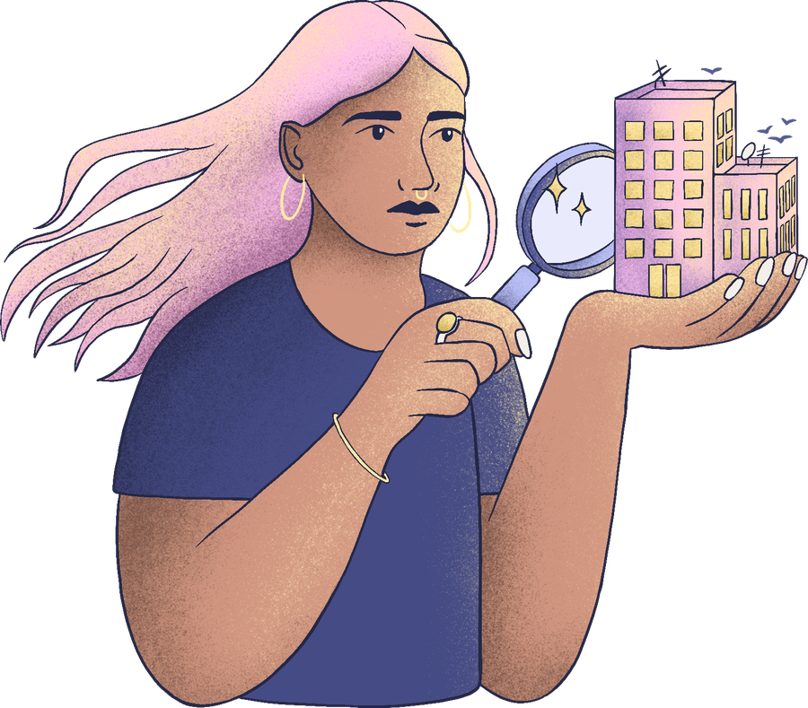

Autodiagnostic
Violences au travail : votre entreprise est-elle en règle ?
Harcèlement moral et sexuel, agissements sexistes, discriminations : référent, procédure de signalement, document unique, égalité femmes-hommes… En quelques questions, vérifiez si votre organisation respecte ses obligations légales de prévention.

Ce diagnostic est indicatif et ne remplace ni un audit ni un conseil juridique. Les seuils d'effectif s'apprécient en général sur 12 mois consécutifs. Textes en vigueur au 10 novembre 2026, consultables sur Légifrance et code.travail.gouv.fr.